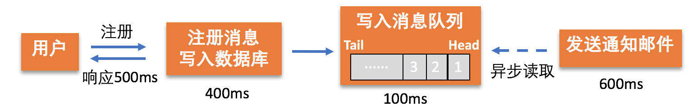
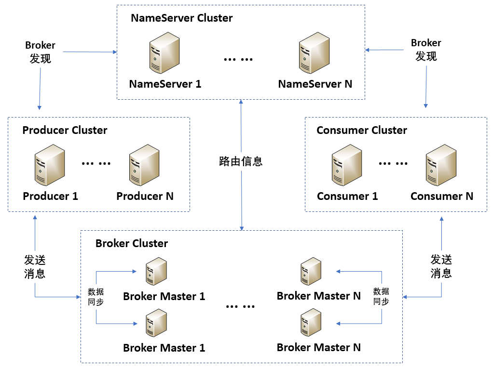
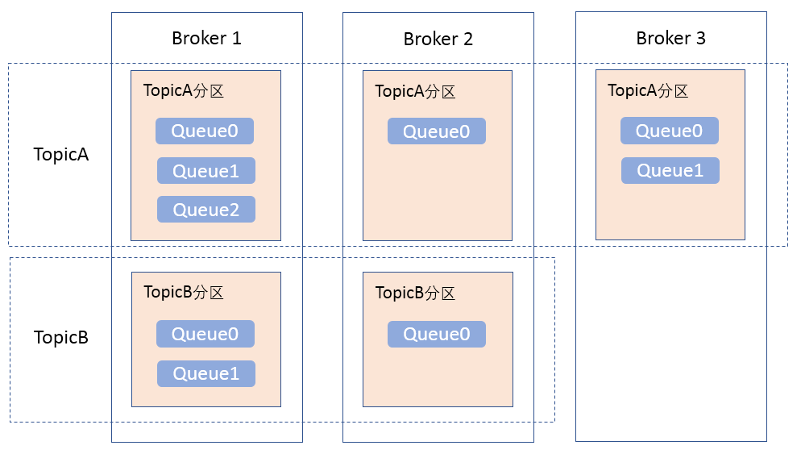
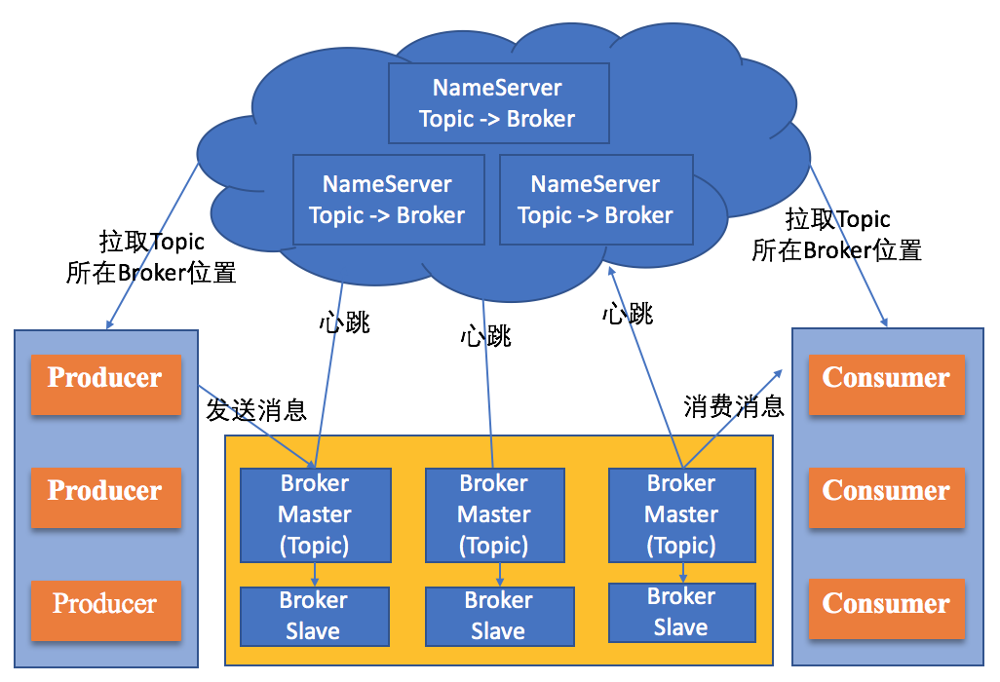
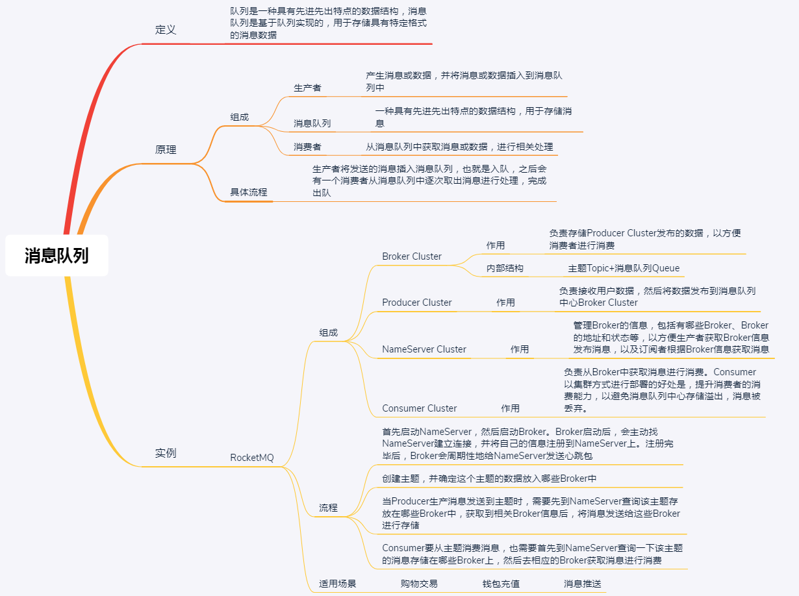

- 00 开篇词 四纵四横，带你透彻理解分布式技术.md.html
- 01 分布式缘何而起：从单兵，到游击队，到集团军.md.html
- 02 分布式系统的指标：啥是分布式的三围.md.html
- 03 分布式互斥：有你没我，有我没你.md.html
- 04 分布式选举：国不可一日无君.md.html
- 05 分布式共识：存异求同.md.html
- 06 分布式事务：All or nothing.md.html
- 07 分布式锁：关键重地，非请勿入.md.html
- 08 分布式技术是如何引爆人工智能的？.md.html
- 09 分布式体系结构之集中式结构：一人在上，万人在下.md.html
- 10 分布式体系结构之非集中式结构：众生平等.md.html
- 11 分布式调度架构之单体调度：物质文明、精神文明一手抓.md.html
- 12 分布式调度架构之两层调度：物质文明、精神文明两手抓.md.html
- 13 分布式调度架构之共享状态调度：物质文明、精神文明多手协商抓.md.html
- 14 答疑篇：分布式事务与分布式锁相关问题.md.html
- 15 分布式计算模式之MR：一门同流合污的艺术.md.html
- 16 分布式计算模式之Stream：一门背锅的艺术.md.html
- 17 分布式计算模式之Actor：一门甩锅的艺术.md.html
- 18 分布式计算模式之流水线：你方唱罢我登场.md.html
- 19 分布式通信之远程调用：我是你的千里眼.md.html
- 20 分布式通信之发布订阅：送货上门.md.html
- 21 分布式通信之消息队列：货物自取.md.html
- 22 答疑篇：分布式体系架构与分布式计算相关问题.md.html
- 23 CAP理论：这顶帽子我不想要.md.html
- 24 分布式数据存储系统之三要素：顾客、导购与货架.md.html
- 25 数据分布方式之哈希与一致性哈希：“掐指一算”与“掐指两算”的事.md.html
- 26 分布式数据复制技术：分身有术.md.html
- 27 分布式数据之缓存技术：“身手钥钱”随身带.md.html
- 28 分布式高可靠之负载均衡：不患寡，而患不均.md.html
- 29 分布式高可靠之流量控制：大禹治水，在疏不在堵.md.html
- 30 分布式高可用之故障隔离：当断不断，反受其乱.md.html
- 31 分布式高可用之故障恢复：知错能改，善莫大焉.md.html
- 32 答疑篇：如何判断并解决网络分区问题？.md.html
- 33 知识串联：以购买火车票的流程串联分布式核心技术.md.html
- 34 搭建一个分布式实验环境：纸上得来终觉浅，绝知此事要躬行.md.html
- 特别放送 Jackey：寄语天涯客，轻寒底用愁.md.html
- 特别放送 分布式下的一致性杂谈.md.html
- 特别放送 崔新：追根溯源，拨开云雾见青天.md.html
- 特别放送 徐志强：学习这件事儿，不到长城非好汉.md.html
- 特别放送 那些你不能错过的分布式系统论文.md.html
- 结束语 为什么说提升职业竞争力要从尊重、诚实开始？.md.html
- 捐赠
21 分布式通信之消息队列：货物自取
你好，我是聂鹏程。今天，我来继续带你打卡分布式核心技术。
在上一篇文章，我带你学习了分布式通信技术中的发布订阅。总结来说，发布订阅就是发布者产生数据到消息中心，订阅者订阅自己感兴趣的消息，消息中心根据订阅者的订阅情况，将相关消息或数据发送给对应的订阅者。所以，我将其思想，概括为“送货上门”。
在实际使用场景中，还有一种常用的通信方式，就是将消息或数据放到一个队列里，谁需要谁就去队列里面取。在分布式领域中，这种模式叫“消息队列”。与发布订阅相比，消息队列技术的核心思想可以概括为“货物自取”。
接下来，我们就一起打卡分布式通信技术中的消息队列吧。
什么是消息队列？
回想一下，在上一篇学术电子论文订阅的例子中，出版社或会议方将论文发布到论文网站（或平台）上，然后论文网站再将论文推送给订阅相关论文的老师或学生。这里的论文网站就是消息中心，负责根据订阅信息将论文送货上门，角色非常关键。
但其实，除了将论文送货上门外，我们还能想到另外一种模式，也就是出版社或会议方将论文发布到论文网站进行存储，老师或学生根据需要到论文网站按需购买文章。
这种思想，在分布式通信领域中称为消息队列模式，论文网站充当的就是消息队列的角色，也非常关键。接下来，我再通过一个具体的应用案例来帮助你更加深入地理解什么是消息队列吧。
比如，很多系统都提供了用户注册功能，注册完成后发送通知邮件。如下图所示，假设用户通过邮箱进行注册，填写完注册信息并点击提交后，系统的处理过程主要分为两步：
- 检查用户注册信息的合法性，如果合法则将注册信息写入数据库中，若不合法，直接返回，流程结束；
- 将用户注册信息写入数据库后，给用户发送通知邮件，以告知用户注册的相关信息，比如注册账号等信息。
假设，系统将注册信息写入数据库需要花费400ms、给用户发送通知邮件需要花费600ms。
这时，注册消息写入数据库和发送通知邮件这两个组件间是直接交互，且是同步通信方式。那么，从用户提交注册到收到响应，需要等系统完成这两个步骤。也就是说，如果不考虑通信延迟的话，注册系统对用户的响应时间是1000ms，即1s。
如下图所示，如果引入消息队列作为注册消息写入数据库和发送通知邮件这两个组件间的中间通信者，那么这两个组件就可以实现异步通信、异步执行。引入消息队列后，上述步骤可以分为三步：
- 检查用户注册信息的合法性，如果合法则将注册信息写入数据库中，若不合法则直接返回，流程结束；
- 注册消息写入消息数据库后，将消息写入消息队列的队尾；
- 发送通知邮件的组件去消息队列取出队首的消息，给用户发送通知邮件，告知用户注册的相关信息。
也就是说，采用消息队列模式，只需要第2步完成，即可给用户返回响应。第3步发送通知邮件可以在返回响应之后执行。
用户的注册信息写入数据库之后，通过数据库的可靠性设计来保证用户注册信息不会丢失，也就是说发送通知邮件的组件一定可以获取到用户注册信息，即保证会给注册用户发送通知邮件。也就是说，消息队列的引入不会影响用户注册网站，但会提升用户响应效率。

通常情况下，将消息写入消息队列的速度很快，假设需要100ms。那么，引入消息队列后，发送通知邮件实现了异步读取，系统响应时间缩短为500ms，响应速度提升了一倍，提升了用户体验。
讲完了用户注册这个例子，我们再来看消息队列的定义就比较容易理解了。
队列是一种具有先进先出特点的数据结构，消息队列是基于队列实现的，存储具有特定格式的消息数据，比如定义一个包含消息类型、标志消息唯一性的ID、消息内容的一个结构体作为消息数据的特定格式。消息以特定格式放入这个队列的尾部后可以直接返回，并不需要系统马上处理，之后会有其他进程从队列头部开始读取消息，按照消息放入的顺序逐一处理。
从上面的例子中，我们也可以看出引入消息队列的好处是，提高响应速度，以及实现组件间的解耦。
消息队列的原理
现在，我把消息队列的工作原理从用户注册这个例子中剥离出来，给你一个更加直接的解释吧。
消息队列工作原理
消息队列的核心结构，如下图所示。与发布订阅模式类似，消息队列模式也是包括3个核心部分：
- 生产者。生产者会产生消息或数据，并将消息或数据插入到消息队列中。
- 消息队列。一种具有先进先出特点的数据结构，用于存储消息。
- 消费者。从消息队列中获取消息或数据，进行相关处理。
具体流程是，生产者将发送的消息插入消息队列，也就是入队，之后会有一个消费者从消息队列中逐次取出消息进行处理，完成出队。

了解了消息队列的工作原理，接下来我以阿里开源的RocketMQ为例，与你进一步介绍消息队列的原理、工作机制和实践应用。
RocketMQ消息队列原理及工作机制
首先，我们看一下RocketMQ的架构图，形成一个整体认知。

RokcetMQ共包括NameServer Cluster、Producer Cluster、Broker Cluster和Consumer Cluster共4部分。接下来，我们一起看看每部分的具体功能吧。
NameServer Cluster，指的是名字服务器集群。这个集群的功能与Kafka中引入的ZooKeeper类似，提供分布式服务的协同和管理功能，在RocketMQ中主要是管理Broker的信息，包括有哪些Broker、Broker的地址和状态等，以方便生产者获取Broker信息发布消息，以及订阅者根据Broker信息获取消息。
Producer Cluster，指的是生产者集群，负责接收用户数据，然后将数据发布到消息队列中心Broker Cluster。那么，生产者按照集群的方式进行部署，好处是什么呢？在我看来，好处可以概括为以下两点：
- 一是，多个Producer可以并发接收用户的输入数据，提升业务处理效率；
- 二是，考虑到可靠性问题，如果只有一个Producer接收用户输入数据，当这个Producer故障后，整个业务就无法运行了。
Consumer Cluster，指的是消费者集群，负责从Broker中获取消息进行消费。Consumer以集群方式进行部署的好处是，提升消费者的消费能力，以避免消息队列中心存储溢出，消息被丢弃。
Broker Cluster，指的是Broker集群，负责存储Producer Cluster发布的数据，以方便消费者进行消费。
Broker Cluster中的每个Broker都进行了主从设计，即每个Broker分为Broker Master 和 Broker Slave，Master 既可以写又可以读，Slave 不可以写只可以读。每次Broker Master会把接收到的消息同步给Broker Slave，以实现数据备份。一旦Broker Master崩溃了，就可以切换到Broker Slave继续提供服务。这种设计的好处是，提高了系统的可靠性。
可以看出，Broker Cluster就是我们今天要讲的核心“消息队列中心”，那么它到底是如何采用队列实现的呢？接下来，我们就一起看看Broker Cluster的实现方式吧。
如下图所示，在Broker Cluster中，消息的存储采用主题（Topic）+消息队列（Queue）的方式实现：

与Kafka一样，RocketMQ中的主题也是一个逻辑概念。一个主题可以分区，分布在各个不同的Broker中，每个Broker上只有该主题的部分数据。每个主题分区中，队列的数量可以不同，由用户在创建主题时指定。队列是资源分配的基本单元，消息进行存储时会存放到相应主题的分区中。
上面我为你介绍了RocketMQ的关键组件。接下来，我们再看看RocketMQ的工作流程，如下图所示：

- 首先启动NameServer，然后启动Broker。Broker启动后，会主动找NameServer建立连接，并将自己的信息注册到NameServer上。注册完毕后，Broker会周期性地给NameServer发送心跳包，比如每隔1s发送一次，以告知NameServer自己还活着；心跳包里还可以包括Broker当前存储的数据信息，也就是说Broker可以周期性地向NameServer更新自己的数据信息，以保证NameServer上存储的数据是最新的。
- 创建主题，并确定这个主题的数据放入哪些Broker中。
- 当Producer生产消息发送到主题时，需要先到NameServer查询该主题存放在哪些Broker中，获取到相关Broker信息后，将消息发送给这些Broker进行存储。
- Consumer要从主题消费消息，也需要首先到NameServer查询一下该主题的消息存储在哪些Broker上，然后去相应的Broker获取消息进行消费。
通过对RocketMQ的介绍，相信你已经对消息队列有比较深刻的认识了。接下来，我们再看看消息队列模式适用于什么场景吧。
消息队列模式，是根据消费者需求到消息队列获取数据消费的，消费者只需要知道消息队列地址即可，消息队列中心也无需提前知道消费者信息。也就是说，这种模式对消费者没有特别需求，因此比较适合消费者为临时用户的场景。
比如目前，阿里内部将RocketMQ应用于购物交易、充值、消息推送等多个场景，因为在这些场景下，每个消费者不是常驻进程或服务，几乎都是临时存在。此外，滴滴、联想等公司也都有采用RocketMQ。
知识扩展：发布订阅和消息队列模式都支持系统解耦，两者是否一致呢？
概括地说，发布订阅和消息队列模式虽然都支持系统解耦，但它们在实现时采用的数据结构和方式并不相同。
首先，我们看一下它们实现解耦的数据结构。
- 发布订阅模式采用了消息中心，消息队列模式采用了消息队列中心，它们均用来存储生产者发布的数据，并均有主题、Broker等概念；
- 唯一不同之处，是消息队列模式中采用了具有先进先出特征的队列结构进行存储，而订阅发布采用了map或数组等方式存储。
然后，我们再看看它们实现解耦的方式。
- 消息队列模式中，生产者发布数据到消息队列中心，消息队列中心会存储数据，等待消费者按需获取数据。这样生产者就不需要和消费者进行直接通信了，实现了生产者和消费者的解耦。
- 而在发布订阅模式中，消费者需要提前向消息中心订阅自己感兴趣的数据，待生产者发布数据到消息中心后，消息中心根据订阅者订阅信息将数据主动推送给消费者，也实现了消费者和生产者的解耦。
对于消息队列模式，消息队列中心无需提前获取消费者信息，因此对消费者比较灵活，适合消费者为临时用户的场景；而发布订阅模式，需要消费者提前向消息中心订阅消息，也就是说消息中心需要提前获取消费者信息，比较适合消费者为长驻进程或服务的场景。
总结
今天，我主要与你分享的是分布式通信技术中的消息队列模式。
首先，我通过用户注册的案例，与你介绍了什么是消息队列模式，以及它的好处。其中，消息队列模式中的核心是以一种具有先进先出特点的队列结构来存储数据，实现组件间的解耦和异步执行。
然后，我与你介绍了消息队列的基本原理，并以RocketMQ为例对其架构、核心组件和工作原理做了更深入的讲解，以帮助你进一步了解消息队列模型。
最后，我再通过一张思维导图来归纳一下今天的核心知识点吧。

加油，行动起来，试着将发布订阅和消息队列这两种通信模式用到你的业务场景中吧，相信你可以的。如果你需要进一步了解这两种通信模式对应的产品源码的话，相信你结合这两篇文章中讲述的原理，可以比较容易地开启你的源码之旅了。
思考题
消息队列模型中，消费者是主动去消息队列获取消息的，而消息队列需要保证多个消费者可以获取到消息，也就是说一个消费者获取消息后并不会删除该消息，那么如何保证同一个消息不被同一个消费者重复消费呢？
我是聂鹏程，感谢你的收听，欢迎你在评论区给我留言分享你的观点，也欢迎你把这篇文章分享给更多的朋友一起阅读。我们下期再会！
© 2019 - 2023 Liangliang Lee. Powered by gin and hexo-theme-book.